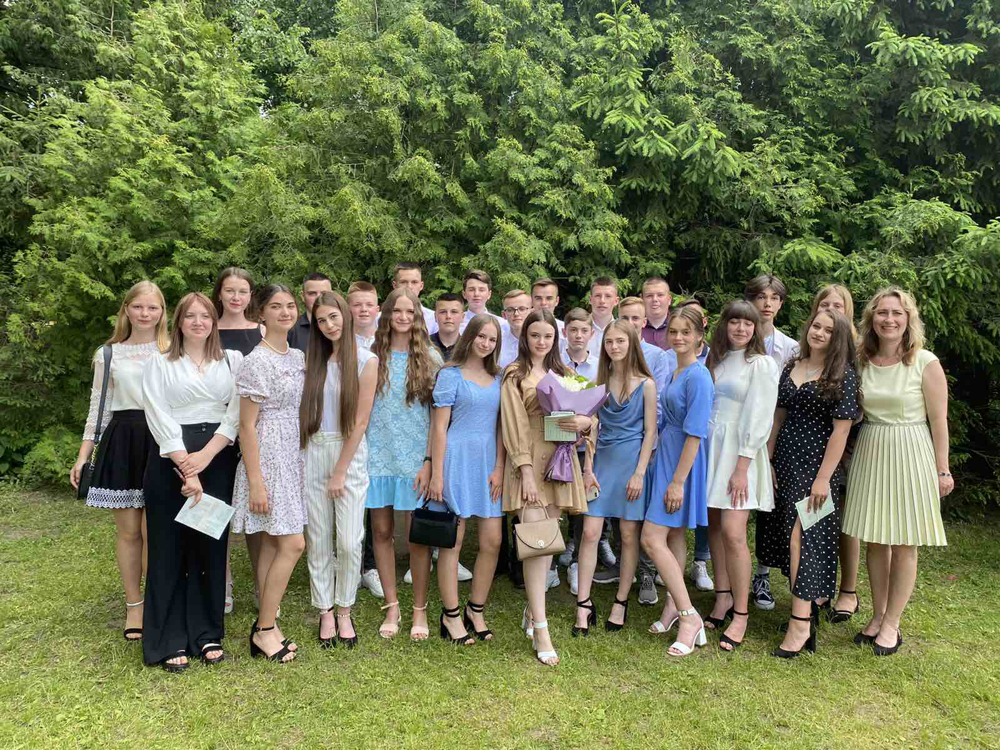
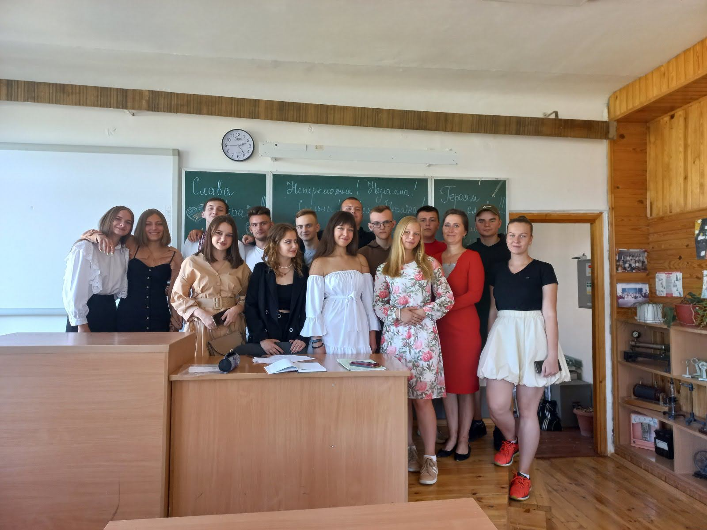
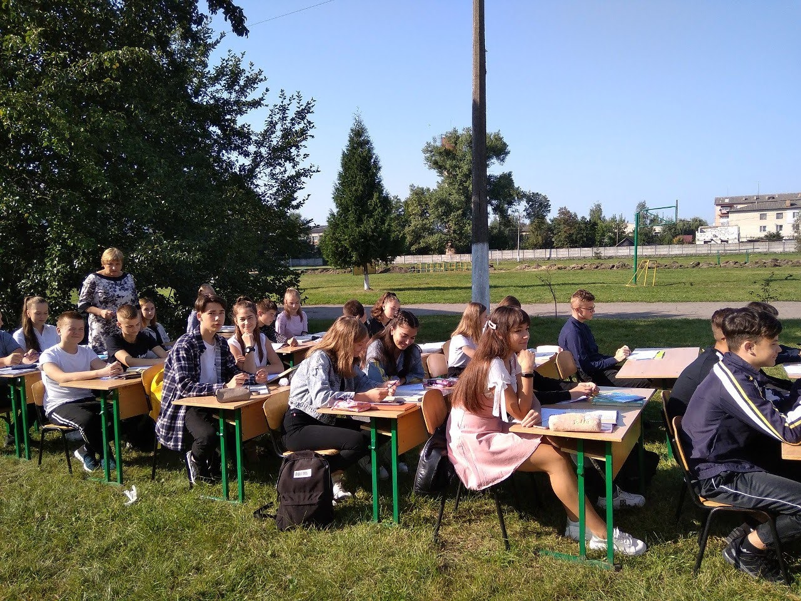
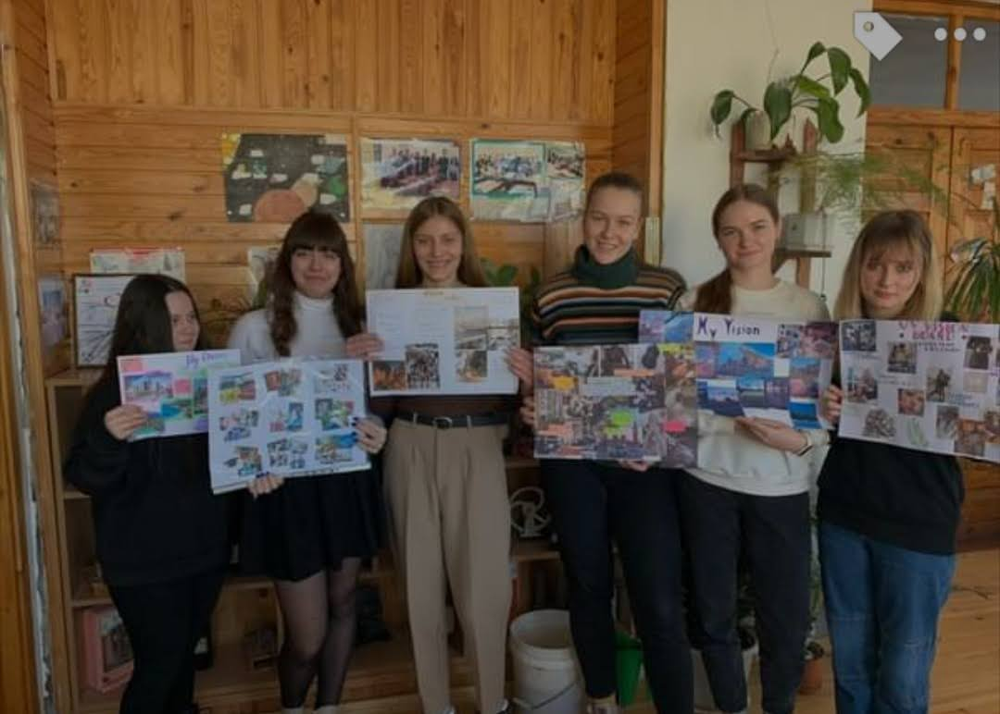
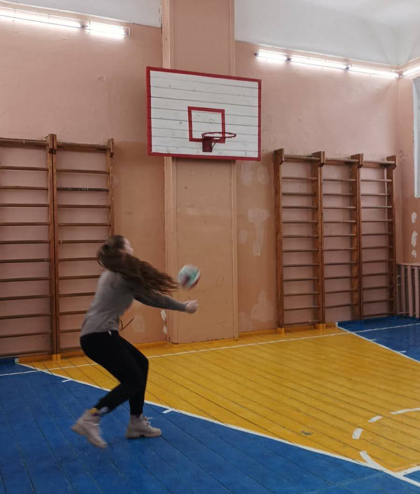
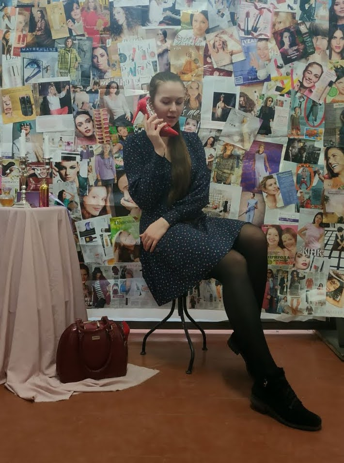

Рокитнівський ліцей № 1 – це сучасний заклад освіти, який задовольняє пізнавальні інтереси дитини, плекає творчу обдаровану особистість, створює умови для повноцінного інтелектуального, творчого, морального, фізичного розвитку дитини, примноження культури й духовності в усій різноманітності національних та світових зразків, тобто школа життєтворчості.
(Інформацію взято з головної сторінки Рокитнівського ліцею №1)
Ми завжди повертаємост туди, де нам комфортно, затишно та цікаво. Школа в багатьох асоціюється з негативними або нудними емоціями. Проте для мене це справді місце мрій, невеличкий куточок де тебе учать пізнавати світ.
Школа - це місце, де молодь отримує освіту та набуває знання, які потім будуть використовуватися протягом усього життя. Школа навчає нас не лише академічним предметам, але й сприяє розвитку соціальних навичок, формує моральні цінності, виховує в нас толерантність та повагу до інших людей.
Школа - це місце, де молодь має можливість розвиватися як особистість, розкривати свій потенціал та здібності. У школі ми зустрічаємо нових друзів, дізнаємося про різні культури та традиції, збагачуємо свій світогляд.
Школа - це місце, де майбутнє суспільство формується та розвивається. Учні школи стають майбутніми лікарями, вчителями, інженерами, артистами та іншими фахівцями, які змінюватимуть світ на краще.
Школа - це перша сходинка на шляху до успішної кар'єри та здійснення мрій.
Ну і куди без спогадів, а тим паче шкільних. Нижце я розсітила декілька фото та відео, які збереглись з днів, коли я ще була ученицею.
Школа - це місце, де молодь отримує освіту та набуває знання, які потім будуть використовуватися протягом усього життя. Школа навчає нас не лише академічним предметам, але й сприяє розвитку соціальних навичок, формує моральні цінності, виховує в нас толерантність та повагу до інших людей.
Школа - це місце, де молодь має можливість розвиватися як особистість, розкривати свій потенціал та здібності. У школі ми зустрічаємо нових друзів, дізнаємося про різні культури та традиції, збагачуємо свій світогляд.
Школа - це місце, де майбутнє суспільство формується та розвивається. Учні школи стають майбутніми лікарями, вчителями, інженерами, артистами та іншими фахівцями, які змінюватимуть світ на краще.
Школа - це перша сходинка на шляху до успішної кар'єри та здійснення мрій.
Ну і куди без спогадів, а тим паче шкільних. Нижце я розсітила декілька фото та відео, які збереглись з днів, коли я ще була ученицею.





